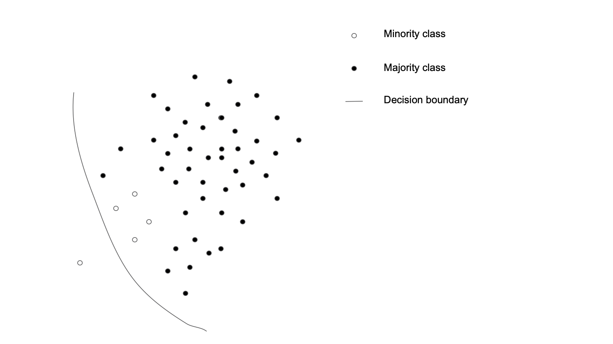
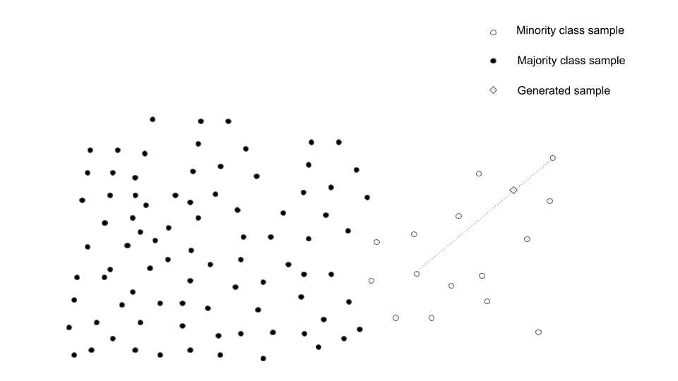
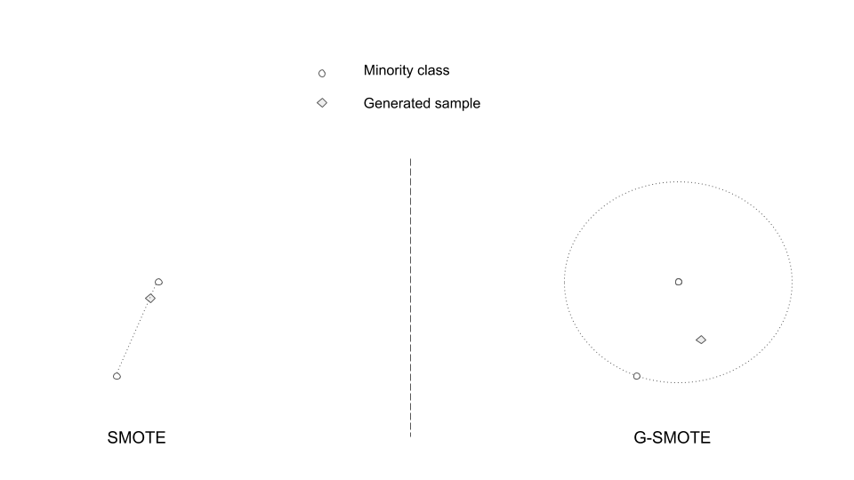
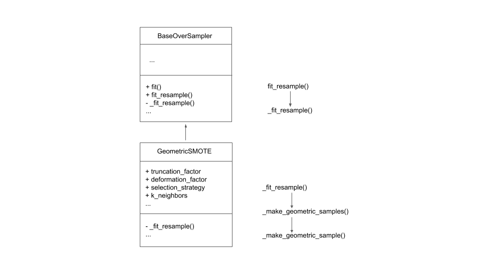
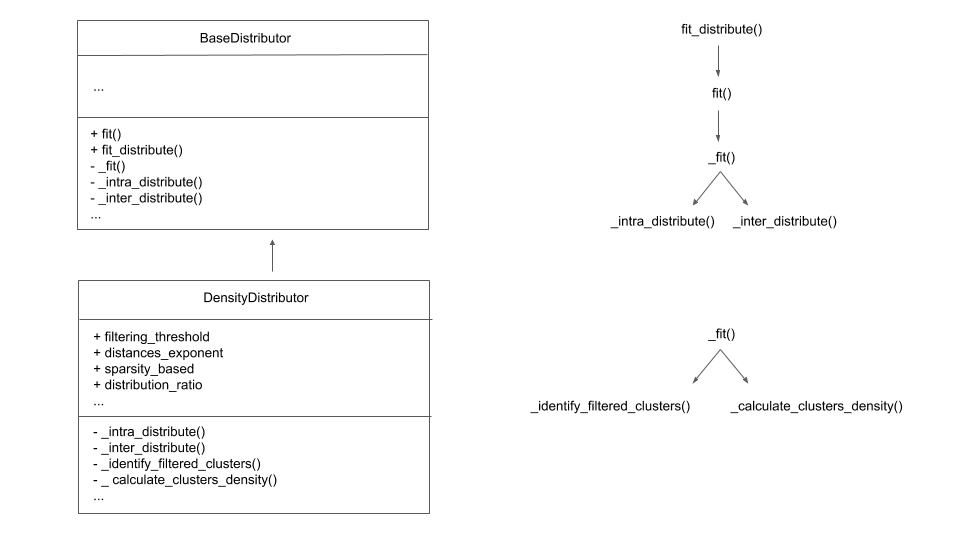
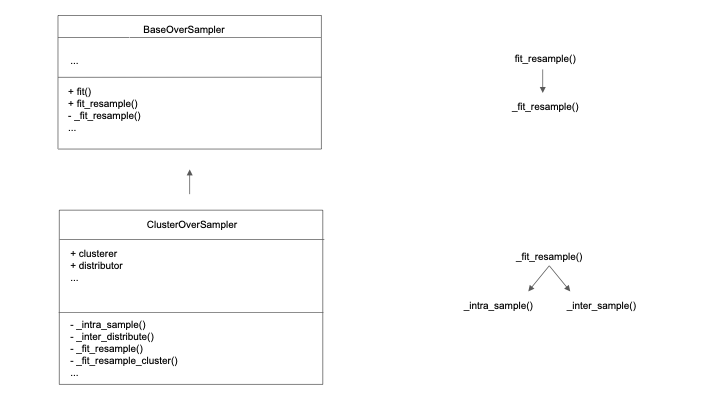

imbalanced-learn-extra: A Python package for novel oversampling algorithms
Artificial Intelligence
Machine Learning
Imbalanced Data
Publication
Authors
Affiliation
Georgios Douzas
NOVA IMS
Fernando Bacao
NOVA IMS
Abstract
Learning from imbalanced data is a common and challenging problem in supervised learning, as standard classifiers are typically designed for balanced class distributions. Among various strategies to address this issue, oversampling algorithms, which generate artificial data to balance class distributions, offer greater flexibility than modifying classification algorithms. In this paper, we present the imbalanced-learn-extra library, describe its implementation in detail, and make it freely available to the machine learning community. The library integrates seamlessly with the Scikit-Learn ecosystem, enabling researchers and practitioners to incorporate it into their existing workflows with ease. The imbalanced-learn-extra Python library implements novel oversampling methods to tackle both between-class and within-class imbalances. Specifically, Geometric SMOTE, enhances the traditional SMOTE algorithm by expanding the data generation area beyond the line segments connecting minority class instances, allowing for greater diversity in synthetic samples and effectively addressing between-class imbalances. On the other hand leverages a clustering-based oversampling addresses within-class imbalances by partitioning the input space into clusters and applying oversampling within each cluster using appropriate resampling ratios. These methods have demonstrated superior performance compared to standard oversampling techniques across a variety of datasets.
The imbalanced learning problem describes the case wherein a machine learning classification task, using datasets with binary or multi-class targets, one of the classes, called the majority class, has a significantly higher number of samples compared to the remaining classes, called the minority class(es) (Nitesh V. Chawla et al. 2003). Learning from imbalanced data is a non-trivial problem for both academic researchers and industry practitioners that can be frequently found in multiple domains such as chemical and biochemical engineering, financial management, information technology, security, business, agriculture or emergency management (Haixiang et al. 2017).
A bias towards the majority class is induced when imbalanced data are used to train standard machine learning algorithms. This results in low classification accuracy, especially for the minority class(es), when the classifier is evaluated on unseen data. An important measure for the degree of data imbalance is the Imbalance Ratio (\(IR\)), defined as the ratio between the number of samples of the majority class and each of the minority classes. Using a rare disease detection task as an example, with 1% of positive cases corresponding to an \(IR=\frac{0.99}{0.01}=99\), a trivial classifier that always labels a person as healthy will score a classification accuracy of 99%. However, in this case, all positive cases remain undetected. The observed values of \(IR\) are often between 100 and 100.000 (N. V. Chawla et al. 2002), (Barua et al. 2014). Figure 1 presents an example of imbalanced data in two dimensions as well as the decision boundary identified by a typical classifier that uses them as training data.

Figure 1: Imbalanced data in two dimensions. The decision boundary of a typical classifier shows a bias towards the majority class.
In this paper, we present imbalanced-learn-extra, a Python library that implements novel oversampling algorithms, including clustering-based oversampling and Geometric SMOTE. The clustering-based approach allows for any combination of a Scikit-Learn(Pedregosa et al. 2012) compatible clustering algorithm and an Imbalanced-Learn(Lemaitre, Nogueira, and Aridas 2016) compatible oversampler. This approach identifies clusters within the input space and applies oversampling individually to each cluster. Additonally, Geometric SMOTE serves as a direct replacement for SMOTE, expanding the data generation mechanism to provide greater flexibility and improved performance.
In Theoretical background section various concepts related to oversampling are presented, while in Implementation and architecture section a description of the software’s implementation and architecture is presented.
Theoretical background
Various approaches have been proposed to improve classification results when the training data are imbalanced, a case also known as a between-class imbalance. The most general approach, called oversampling, is the generation of artificial data for the minority class(es) (Fernández et al. 2013). The synthetic Minority Oversampling Technique (SMOTE) (N. V. Chawla et al. 2002) was the first non-trivial oversampler proposed and remains the most popular one. Although SMOTE is effective for generating artificial data, it also has some drawbacks (Haibo He and Garcia 2009). To improve the quality of the artificial data many variants of SMOTE have been proposed. Nevertheless, they utilize the SMOTE data generation mechanism, which consists of a linear interpolation between minority class samples to generate synthetic instances as shown in figure Figure 2.

Figure 2: Visual representation of the SMOTE data generation mechanism.
Geometric SMOTE
The Geometric SMOTE (G-SMOTE) oversampling algorithm (Douzas and Bacao 2019) uses a different approach compared to existing SMOTE’s variations. More specifically, G-SMOTE oversampling algorithm substitutes the data generation mechanism of SMOTE by defining a flexible geometric region around each minority class instance and generating synthetic instances inside the boundaries of this region. The algorithm requires the selection of the hyperparameters truncation_factor , deformation_factor, selection_strategy and k_neighbors. The first three of them, called geometric hyperparameters, control the shape of the geometric region while the later adjusts its size. Figure Figure 3 presents a visual comparison between the data generation mechanisms of SMOTE and G-SMOTE.

Figure 3: Comparison between the data generation mechanisms of SMOTE and G-SMOTE. SMOTE uses linear interpolation, while G-SMOTE defines a circle as the permissible data generation area.
Clustering-based oversampling
In addition to between-class imbalance, within-class imbalance refers to the case where areas of sparse and dense minority class instances exist. As the first step of generating synthetic samples, the SMOTE data generation mechanism selects randomly, with uniform probability, minority class instances. Consequently, dense minority class areas have a high probability of being inflated further, while sparsely populated are likely to remain sparse. This allows for combating between-class imbalance, while the issue of within-class imbalance is ignored (Prati, Batista, and Monard 2004).
On the other hand, clustering-based oversampling, as presented in (Douzas and Bacao 2017) and (Douzas, Bacao, and Last 2018), aims to deal with both between-class and within-class imbalance problems. Initially, a clustering algorithm is applied to the input space. The resulting clusters allow the identification of sparse and dense minority class(es) areas. A small IR, relative to a threshold, of a particular cluster, is used as an indicator that it can be safely selected as a data generation area, i.e. noise generation is avoided. Furthermore, sparse minority clusters are assigned more synthetic samples, which alleviates within-class imbalance.
Specific realizations of the above approach are SOMO (Douzas and Bacao 2017), KMeans-SMOTE (Douzas, Bacao, and Last 2018) and G-SOMO (Douzas, Rauch, and Bacao 2021) algorithms. Empirical studies have shown that the three algorithms outperform SMOTE and its variants across multiple imbalanced datasets, classifiers and evaluation metrics.
Implementation and architecture
A Python implementation of SMOTE and several of its variants is available in the Imbalanced-Learn library (Lemaitre, Nogueira, and Aridas 2016), which is fully compatible with the popular machine learning toolbox Scikit-Learn(Pedregosa et al. 2012). In this paper, we present imbalanced-learn-extra. The imbalanced-learn-extra software project is compatible with Python 3.10 or greater. It contains an object-oriented implementation of G-SMOTE and the clustering-based oversampling procedure, as well as detailed online documentation. The implementation provides an API that is compatible with Imbalanced-Learn and Scikit-Learn libraries. Therefore, standard machine learning functionalities are supported. The imbalanced-learn-extra project contains the Python package imblearn_extra with the main modules gsmote and clover.
Geometric SMOTE
The imblearn_extra/gsmote directory contains the file geometric_smote.py that includes the class GeometricSMOTE, an implementation of the G-SMOTE algorithm. The initialization of a GeometricSMOTE instance requires the selection of G-SMOTE’s hyperparameters that control the generation of synthetic data. Additionally, GeometricSMOTE inherits from the BaseOverSampler class of Imbalanced-Learn library. Therefore, an instance of GeometricSMOTE class provides the fit and fit_resample methods, the two main methods for resampling. This is achieved by implementing the _fit_resample abstract method of the parent class BaseOverSampler. More specifically, the function _make_geometric_sample implements the data generation mechanism of G-SMOTE. This function is called in the _make_geometric_samples method of the GeometricSMOTE class in order to generate the appropriate number of synthetic data for a particular minority class. Finally, the method _make_geometric_samples is called in _fit_resample method to generate synthetic data for all minority classes. Figure #fig-class_diagram provides a visual representation of the above classes and functions hierarchy.

Figure 4: UML class diagrams and callgraphs of main classes and methods.
Clustering-based oversampling
The imblearn_extra/clover directory contains the distribution and over_sampling directories. The imblearn_extra.clover.distribution module implements the functionality related to the distribution of the generated samples to the identified clusters, while imblearn_extra.clover.over_sampling implements the functionality related to the generation of artificial samples. Both of them are presented in detail below.
Distribution
The imblearn_extra/clover/distribution directory contains the files base.py and _density.py. The former provides the implementation of the BaseDistributor class, the base class for distributors, while the latter includes the DensityDistributor class, a generalization of the density-based distributor presented in (Douzas and Bacao 2017) and (Douzas, Bacao, and Last 2018), that inherits from BaseDistributor. Following the Scikit-Learn API, BaseDistributor includes the public method fit. Also the fit_distribute method is also implemented as the main method of the class.
The fit_distribute method calls the fit method and returns two Python dictionaries that describe the distribution of generated samples inside each cluster and between clusters, respectively. Specifically, the fit method calculates various statistics related to the distribution process, while it calls the _fit method to calculate the actual intra-cluster and inter-cluster distributions. This is achieved by invoking the _intra_distribute and _inter_distribute methods. The BaseDistributor class provides a trivial implementation of them, that should be overwritten when a realization of a distributor class is considered. Therefore, DensityDistributor overwrites both methods as well as the _fit method. The later calls the methods _identify_filtered_clusters and _calculate_clusters_density that identify the clusters used for data generation and calculate their density, respectively. Figure 5 shows a visual representation of the above classes and functions hierarchy.

Figure 5: UML BaseDistributor and DensityDistributor class diagrams and callgraphs of main classes and methods.
Oversampling
The imblearn_extra/clover/over_sampling directory contains the files _cluster.py, _kmeans_smote.py, _somo.py and _gsomo.py. The former provides the ClusterOverSampler class, an extension of the Imbalanced-Learn’s BaseOverSampler class, and implements the functionality required by clustering-based oversampling. The rest of the files _kmeans_smote.py, _somo.py and _gsomo.py utilize the ClusterOverSampler class to provide implementations of KMeans SMOTE, SOMO and Geometric SOMO algorithms, respectively. The initializer of ClusterOverSampler, compared to the base class of oversamplers that is implemented in Imbalanced-Learn BaseOverSampler, includes the extra parameters clusterer and distributor and inherits from it. Also following the Imbalanced-Learn API, ClusterOverSampler includes the public methods fit and fit_resample.
The fit method calculates various statistics related to the resampling process, while the fit_resample method returns an enhanced version of the input data by appending the artificially generated samples. Specifically, fit_resample calls the _fit_resample method that in turn calls the _intra_sample and _inter_sample methods to generate the intra-cluster and inter-cluster artificial samples, respectively. This is achieved by invoking the _fit_resample_cluster method that implements the data generation mechanism. Therefore every oversampler that inherits from the ClusterOverSampler class should overwrite _fit_resample_cluster, providing a concrete implementation of the oversampling process. Figure 6 shows a visual representation of the above classes and functions hierarchy.

Figure 6: UML BaseOverSampler and BaseClusterOversampler class diagrams and callgraphs of main classes and methods.
Software functionalities
Geometric SMOTE
As it was mentioned in subsection, the class GeometricSMOTE represents the G-SMOTE oversampler. The intializer of GeometricSMOTE includes the following G-SMOTE’s hyperparameters: truncation_factor, deformation_factor, selection_strategy and k_neighbors as explained in subsection. Once the GeometricSMOTE object is initialized with a specific parametrization, it can be used to resample the imbalanced data represented by the input matrix X and the target labels y. Following the Scikit-Learn API, both X, y are array-like objects of appropriate shape.
Resampling is achieved by using the two main methods of fit and fit_resample of the GeometricSMOTE object. More specifically, both of them take as input parameters the X and y. The first method computes various statistics which are used to resample X while the second method does the same but additionally returns a resampled version of X and y.
Clustering-based oversampling
As it was mentioned in section Theoretical background, clustering-based oversampling initially applies a clustering algorithm to the input space before oversampling is applied to each cluster. This is achieved through the implementation of the ClusterOverSampler class, an extension of Imbalanced-Learn’s BaseOverSampler class. Oversamplers that inherit from ClusterOverSampler, compared to oversamplers inheriting from BaseOverSampler, require two additional initialization parameters: clusterer and distributor. Their default values are for both parameters equal to None, a case that corresponds to the usual oversampling procedure i.e. no clustering applied to the input space. On the other hand if the parameter clusterer is equal to any Scikit-Learn compatible clustering algorithm then clustering of the input space is initially applied, followed by oversampling in each cluster with the distribution of generated samples calculated by the distributor parameter. The default distributor value is an instance of DensityDistributor class as described in subsection Distribution.
The initializer of DensityDistributor includes the following parameters: filtering_threshold, distances_exponent, sparsity_based and distribution_factor. The first parameter is used to identify the filtered clusters, i.e. clusters of samples that are included in the data generation process. The second parameter modifies the density calculation of the filtered clusters by increasing the effect of euclidean distances between samples. The third parameter selects whether generated samples are assigned to filtered clusters inversely proportional to their density. Finally, the last parameter adjusts the intra-cluster to the inter-cluster proportion of generated samples, while it applies only to clusterers that support a neighborhood structure. Once the DensityDistributor object is initialized with a specific parametrization, it can be used to distribute the generated samples to the clusters identified by any clustering algorithm.
Resampling is achieved by using the two main methods of fit and fit_resample of any oversampler inheriting from ClusterOverSampler. More specifically, both of them take as input parameters the input matrix X and target labels y. Following the Scikit-Learn API, both X, y are array-like objects of appropriate shape. The first method computes various statistics which are used to resample X, while the second method does the same but additionally returns a resampled version of X and y.
Integration
The imbalanced-learn-extra project has been designed to integrate with the Imbalanced-Learn toolbox and Scikit-Learn ecosystem. Therefore the GeometricSMOTE and ClusterOverSampler objects can be used in machine learning pipelines, through Imbalanced-Learn’s class Pipeline, that automatically combines samplers, transformers and estimators. The next section provides examples of the above functionalities.
Usage examples
Examples of imbalanced-learn-extra usage are given below including basic examples and machine learning pipelines.
Geometric SMOTE
Basic example
An example of resampling multi-class imbalanced data using the fit_resample method is presented in the next listing. Initially, a 3-class imbalanced dataset is generated. Next, GeometricSMOTE object is initialized with default values for the hyperparameters, i.e. truncation_factor=1.0, deformation_factor=0.0, selection_strategy='combined'. Finally, the object’s fit_resample method is used to resample the data. Printing the class distribution before and after resampling confirms that the resampled data X_res, y_res are perfectly balanced. X_res, y_res can be used as training data for any classifier in the place of X, y.
# Import classes and functions.from collections import Counterfrom imblearn_extra.gsmote import GeometricSMOTEfrom sklearn.datasets import make_classification# Generate an imbalanced 3-class dataset.X, y = make_classification( random_state=23, n_classes=3, n_informative=5, n_samples=500, weights=[0.8, 0.15, 0.05])# Create a GeometricSMOTE object with default hyperparameters.gsmote = GeometricSMOTE(random_state=10)# Resample the imbalanced dataset.X_res, y_res = gsmote.fit_resample(X, y)# Print number of samples per class for initial and resampled data.init_count =list(Counter(y).values()) resampled_count =list(Counter(y_res).values())print(f'Initial class distribution: {init_count}.')print(f'Resampled class distribution: {resampled_count}.')
Initial class distribution: [400, 75, 25].
Resampled class distribution: [400, 400, 400].
/Users/gdouzas/Library/Application Support/pdm/venvs/blog-h-aHQONM-3.11/lib/python3.11/site-packages/sklearn/base.py:474: FutureWarning: `BaseEstimator._validate_data` is deprecated in 1.6 and will be removed in 1.7. Use `sklearn.utils.validation.validate_data` instead. This function becomes public and is part of the scikit-learn developer API.
warnings.warn(
Machine learning pipeline
As mentioned before, the GeometricSMOTE object can be used as a part of a machine learning pipeline. The next listing presents a pipeline composed by a G-SMOTE oversampler, a PCA tranformation and a decision tree classifier. The pipeline is trained on imbalanced binary-class data and evaluated on a hold-out set. The user applies the process in a simple way while the internal details of the calculations are hidden.
# Import classes and functions.from imblearn_extra.gsmote import GeometricSMOTE from sklearn.datasets import make_classificationfrom sklearn.decomposition import PCAfrom sklearn.tree import DecisionTreeClassifierfrom sklearn.model_selection import train_test_splitfrom sklearn.metrics import f1_scorefrom imblearn.pipeline import make_pipeline# Generate an imbalanced binary-class dataset.X, y = make_classification( random_state=23, n_classes=2, n_samples=500, weights=[0.8, 0.2],)# Split the data to training and hold-out sets.X_train, X_test, y_train, y_test = train_test_split(X, y, random_state=0)# Create the pipeline's objects with default hyperparameters.gsmote = GeometricSMOTE(random_state=11)pca = PCA()clf = DecisionTreeClassifier(random_state=3)# Create the pipeline.pip = make_pipeline(gsmote, pca, clf)# Fit the pipeline to the training set.pip.fit(X_train, y_train)# Evaluate the pipeline on the hold-out set using the F-score.test_score = f1_score(y_test, pip.predict(X_test))print(f'F-score on hold-out set: {test_score}.')
F-score on hold-out set: 0.7.
/Users/gdouzas/Library/Application Support/pdm/venvs/blog-h-aHQONM-3.11/lib/python3.11/site-packages/sklearn/base.py:474: FutureWarning: `BaseEstimator._validate_data` is deprecated in 1.6 and will be removed in 1.7. Use `sklearn.utils.validation.validate_data` instead. This function becomes public and is part of the scikit-learn developer API.
warnings.warn(
Clustering-based oversampling
Basic example
An example of resampling an imbalanced dataset using the fit_resample method is presented. Initially, a binary-class imbalanced dataset is generated. Next, KMeansSMOTE oversampler is initialized with the default parameters. This corresponds to the KMeans-SMOTE algorithm as presented in (Douzas, Bacao, and Last 2018). Finally, the oversampler’s fit_resample method is used to resample the data. Printing the class distribution before and after resampling confirms that the resampled data X_res, y_res are perfectly balanced. X_res, y_res can be used as training data for any classifier in the place of X, y.
# Import classes and functions.from collections import Counterfrom imblearn_extra.clover.over_sampling import KMeansSMOTEfrom sklearn.cluster import KMeansfrom sklearn.datasets import make_classification# Generate an imbalanced binary class dataset.X, y = make_classification( random_state=23, n_classes=2, n_features=5, n_samples=1000, weights=[0.8, 0.2])# Create KMeans-SMOTE object with default hyperparameters.kmeans_smote = KMeansSMOTE(random_state=10)# Resample the imbalanced dataset.X_res, y_res = kmeans_smote.fit_resample(X, y) # Print number of samples per class for initial and resampled data. init_count =list(Counter(y).values())resampled_count =list(Counter(y_res).values())print(f'Initial class distribution: {init_count}.') print(f'Resampled class distribution: {resampled_count}.')
Initial class distribution: [792, 208].
Resampled class distribution: [792, 792].
Machine learning pipeline
As mentioned before, any clustering-based oversampler can be used as a part of a machine learning pipeline. A a pipeline is presented, composed by the combination of Borderline SMOTE oversampler and hierarchical clustering, a PCA tranformation and a decision tree classifier. The pipeline is trained on multi-class imbalanced data and evaluated on a hold-out set. The user applies the process in a simple way while the internal details of the calculations are hidden.
# Import classes and functions.from imblearn_extra.clover.over_sampling import ClusterOverSamplerfrom sklearn.datasets import make_classificationfrom sklearn.decomposition import PCAfrom sklearn.tree import DecisionTreeClassifierfrom sklearn.model_selection import train_test_splitfrom sklearn.metrics import f1_scorefrom sklearn.cluster import AgglomerativeClusteringfrom imblearn.over_sampling import BorderlineSMOTEfrom imblearn.pipeline import make_pipeline# Generate an imbalanced multi-class dataset.X, y = make_classification( random_state=23, n_classes=3, n_informative=10, n_samples=500, weights=[0.8, 0.1, 0.1])# Split the data to training and hold-out sets.X_train, X_test, y_train, y_test = train_test_split(X, y, random_state=10)# Create the pipeline's objects with default hyperparameters.hclusterer_bsmote = ClusterOverSampler(oversampler=BorderlineSMOTE(random_state=5), clusterer=AgglomerativeClustering(), random_state=19)pca = PCA()clf = DecisionTreeClassifier(random_state=3)# Create the pipeline.pip = make_pipeline(hclusterer_bsmote, pca, clf)# Fit the pipeline to the training set.pip.fit(X_train, y_train)# Evaluate the pipeline on the hold-out set using the F-score.test_score = f1_score(y_test, pip.predict(X_test), average='micro')print(f'F-score on hold-out set: {test_score:.2f}.')
F-score on hold-out set: 0.75.
Quality control
All functions and classes have been tested for functionality and usability. These tests are integrated into the GitHub Actions continuous integration (CI) service and they are automatically run each time new commits are pushed to GitHub using all supported operating systems and Python versions. Checks in code quality, vulnerabilities in dependencies and type annotations are applied through external libraries. Various development scripts that automate the above tasks are provided and described in detail in the Contributing section of the online documentation and Github.
Availability
Operating system
Any system (GNU/Linux, Mac OSX, Windows) capable of running Python ≥ 3.10.
The imbalanced-learn-extra project provides the only Python implementation, to the best of our knowledge, that provides a generic way to construct any clustering-based oversampler. A significant advantage of this implementation is that it is built on top of the Scikit-Learn’s ecosystem and therefore it can be easily used in typical machine learning workflows. Also, the public API of any clustering-based oversampler is an extension of the one provided in Imbalanced-Learn. This means that users of Imbalanced-Learn and Scikit-Learn, that apply oversampling on imbalanced data, can integrate imbalanced-learn-extra in their existing work in a straightforward manner.
Users can request support by opening an issue on GitHub. Additionally users may do Pull Requests and contribute to the development of imbalanced-learn-extra. The documentation of the projects describes in detail the API and provides various complete examples.
Funding statement
Funding: This research was supported by a grant from the Portuguese Foundation for Science and Technology (“Fundação para a Ciência e a Tecnologia”), DSAIPA/DS/0116/2019.
Competing interests
The authors declare that they have no competing interests.
References
Barua, Sukarna, Md. Monirul Islam, Xin Yao, and Kazuyuki Murase. 2014. “MWMOTE–MajorityWeightedMinorityOversamplingTechnique for ImbalancedDataSetLearning.”IEEE Transactions on Knowledge and Data Engineering 26 (2): 405–25. https://doi.org/10.1109/TKDE.2012.232.
Chawla, N. V., K. W. Bowyer, L. O. Hall, and W. P. Kegelmeyer. 2002. “SMOTE: SyntheticMinorityOver-Sampling Technique.”Journal of Artificial Intelligence Research 16 (June): 321–57. https://doi.org/10.1613/jair.953.
Chawla, Nitesh V., Aleksandar Lazarevic, Lawrence O. Hall, and Kevin W. Bowyer. 2003. “SMOTEBoost: ImprovingPrediction of the MinorityClass in Boosting.” In Knowledge Discovery in Databases: PKDD 2003, edited by Gerhard Goos, Juris Hartmanis, Jan van Leeuwen, Nada Lavrač, Dragan Gamberger, Ljupčo Todorovski, and Hendrik Blockeel, 2838:107–19. Berlin, Heidelberg: Springer Berlin Heidelberg. https://doi.org/10.1007/978-3-540-39804-2_12.
Douzas, Georgios, and Fernando Bacao. 2017. “Self-OrganizingMapOversampling (SOMO) for Imbalanced Data Set Learning.”Expert Systems with Applications 82 (October): 40–52. https://doi.org/10.1016/j.eswa.2017.03.073.
———. 2019. “Geometric SMOTE a Geometrically Enhanced Drop-in Replacement for SMOTE.”Information Sciences 501 (October): 118–35. https://doi.org/10.1016/j.ins.2019.06.007.
Douzas, Georgios, Fernando Bacao, and Felix Last. 2018. “Improving Imbalanced Learning Through a Heuristic Oversampling Method Based on k-Means and SMOTE.”Information Sciences 465 (October): 1–20. https://doi.org/10.1016/j.ins.2018.06.056.
Douzas, Georgios, Rene Rauch, and Fernando Bacao. 2021. “G-SOMO: An Oversampling Approach Based on Self-Organized Maps and Geometric SMOTE.”Expert Systems with Applications 183 (November): 115230. https://doi.org/10.1016/j.eswa.2021.115230.
Fernández, Alberto, Victoria López, Mikel Galar, María José Del Jesus, and Francisco Herrera. 2013. “Analysing the Classification of Imbalanced Data-Sets with Multiple Classes: Binarization Techniques and Ad-Hoc Approaches.”Knowledge-Based Systems 42 (April): 97–110. https://doi.org/10.1016/j.knosys.2013.01.018.
Haibo He, and E. A. Garcia. 2009. “Learning from ImbalancedData.”IEEE Transactions on Knowledge and Data Engineering 21 (9): 1263–84. https://doi.org/10.1109/TKDE.2008.239.
Haixiang, Guo, Li Yijing, Jennifer Shang, Gu Mingyun, Huang Yuanyue, and Gong Bing. 2017. “Learning from Class-Imbalanced Data: Review of Methods and Applications.”Expert Systems with Applications 73 (May): 220–39. https://doi.org/10.1016/j.eswa.2016.12.035.
Lemaitre, Guillaume, Fernando Nogueira, and Christos K. Aridas. 2016. “Imbalanced-Learn: APythonToolbox to Tackle the Curse of ImbalancedDatasets in MachineLearning.”https://doi.org/10.48550/ARXIV.1609.06570.
Pedregosa, Fabian, Gaël Varoquaux, Alexandre Gramfort, Vincent Michel, Bertrand Thirion, Olivier Grisel, Mathieu Blondel, et al. 2012. “Scikit-Learn: MachineLearning in Python.”https://doi.org/10.48550/ARXIV.1201.0490.
Prati, Ronaldo C., Gustavo E. A. P. A. Batista, and Maria Carolina Monard. 2004. “Learning with ClassSkews and SmallDisjuncts.” In Advances in ArtificialIntelligence – SBIA 2004, edited by David Hutchison, Takeo Kanade, Josef Kittler, Jon M. Kleinberg, Friedemann Mattern, John C. Mitchell, Moni Naor, et al., 3171:296–306. Berlin, Heidelberg: Springer Berlin Heidelberg. https://doi.org/10.1007/978-3-540-28645-5_30.